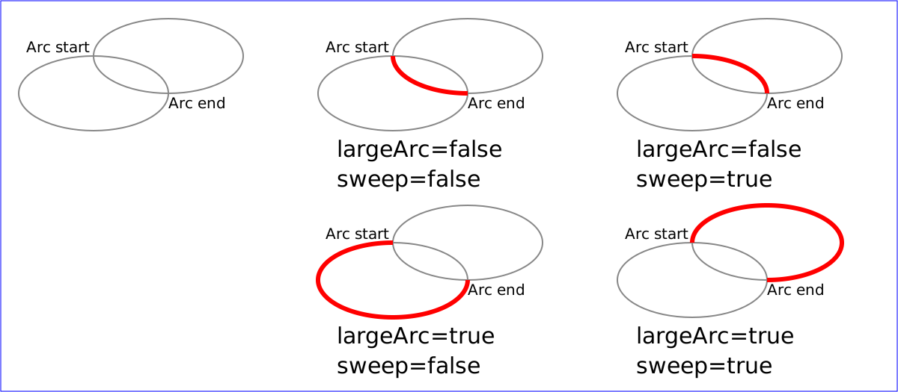
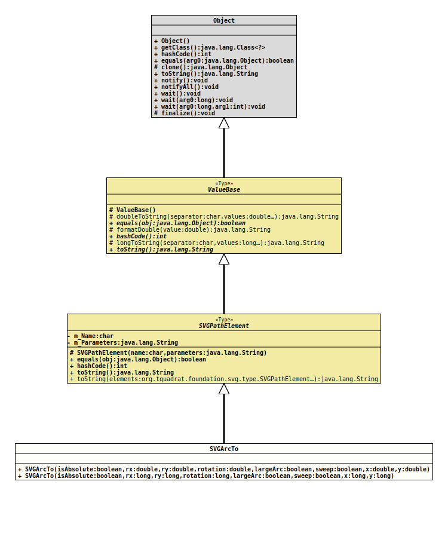

Module org.tquadrat.foundation.svg
Package org.tquadrat.foundation.svg.type
Class SVGPathElement.SVGArcTo
java.lang.Object
org.tquadrat.foundation.svg.type.ValueBase
org.tquadrat.foundation.svg.type.SVGPathElement
org.tquadrat.foundation.svg.type.SVGPathElement.SVGArcTo
- Enclosing class:
SVGPathElement
@ClassVersion(sourceVersion="$Id: SVGPathElement.java 1076 2023-10-03 18:36:07Z tquadrat $")
@API(status=STABLE,
since="0.0.5")
public static final class SVGPathElement.SVGArcTo
extends SVGPathElement
{kind=link}
The implementation of the SVG path
The elliptical arc command draws a section of an ellipse which meets the following constraints:
ArcTo element. The elliptical arc command draws a section of an ellipse which meets the following constraints:
- the arc starts at the current point
- the arc ends at point (x, y)
- the ellipse has the two radii (rx, ry)
- the x-axis of the ellipse is rotated by x-axis-rotation degrees relative to the x-axis of the current coordinate system
largeArc (large-arc-flag in SVG) and
sweep (sweep-flag) indicate which one of the four arcs
are drawn, as follows:
- Of the four candidate arc sweeps, two will represent an arc sweep
of greater than or equal to 180 degrees (the "large-arc"),
and two will represent an arc sweep of less than or equal to 180
degrees (the "small-arc"). If
largeArcistrue, then one of the two larger arc sweeps will be chosen; otherwise, iflargeArc==false, one of the smaller arc sweeps will be chosen - If
sweep==true, then the arc will be drawn in a "positive-angle" direction (i.e., the ellipse formulax = cx + rx * cos( theta )andy = cy + ry * sin( theta )is evaluated such thatthetastarts at an angle corresponding to the current point and increases positively until the arc reaches (x,y)). A type offalse) causes the arc to be drawn in a "negative-angle" direction (i.e.,thetastarts at an angle type corresponding to the current point and decreases until the arc reaches (x,y)).
largeArc (large-arc-flag) and sweep
(sweep-flag) and the four different arcs that will be drawn
based on the values of these flags. For each case, the following path
data command was used: <path d="M 125,75 a100,50 0 ?,? 100,50"
style="fill:none; stroke:red; stroke-width:6"/>true is represented as 1 and
false as 0, so "?,?" is replaced by
"0,0", "0,1",
"1,0" and "1,1" to generate the
four possible cases.
- Author:
- Thomas Thrien (thomas.thrien@tquadrat.org)
- Version:
- $Id: SVGPathElement.java 1076 2023-10-03 18:36:07Z tquadrat $
- Since:
- 0.0.5
- UML Diagram
-

UML Diagram for "org.tquadrat.foundation.svg.type.SVGPathElement.SVGArcTo"
{kind=link}
-
Nested Class Summary
Nested classes/interfaces inherited from class org.tquadrat.foundation.svg.type.SVGPathElement
SVGPathElement.SVGArcTo, SVGPathElement.SVGClosePath, SVGPathElement.SVGCubicCurveTo, SVGPathElement.SVGHLineTo, SVGPathElement.SVGLineTo, SVGPathElement.SVGMoveTo, SVGPathElement.SVGQuadraticCurveTo, SVGPathElement.SVGVLineTo -
Constructor Summary
ConstructorsConstructorDescriptionSVGArcTo(boolean isAbsolute, double rx, double ry, double rotation, boolean largeArc, boolean sweep, double x, double y) Creates a newSVGArcToinstance.SVGArcTo(boolean isAbsolute, long rx, long ry, long rotation, boolean largeArc, boolean sweep, long x, long y) Creates a newSVGArcToinstance. -
Method Summary
Methods inherited from class org.tquadrat.foundation.svg.type.SVGPathElement
equals, hashCode, toString, toStringMethods inherited from class org.tquadrat.foundation.svg.type.ValueBase
doubleToString, formatDouble, longToString
){kind=link}
-
Constructor Details
-
SVGArcTo
public SVGArcTo(boolean isAbsolute, double rx, double ry, double rotation, boolean largeArc, boolean sweep, double x, double y) Creates a newSVGArcToinstance.- Parameters:
isAbsolute-trueif the given coordinates are absolute,falseif they are relative to the last point on the path.rx- The x radius for the ellipsis.ry- The y radius for the ellipsis.rotation- The rotation of the x-axis.largeArc-trueto draw the larger arc,falsefor the smaller arc.sweep-trueto draw the arc in "positive-angle" direction,falsefor drawing it in a "negative-angle" direction.x- The x coordinate for the end point of the line.y- The y coordinate for the end point of the line.
-
SVGArcTo
public SVGArcTo(boolean isAbsolute, long rx, long ry, long rotation, boolean largeArc, boolean sweep, long x, long y) Creates a newSVGArcToinstance.- Parameters:
isAbsolute-trueif the given coordinates are absolute,falseif they are relative to the last point on the path.rx- The x radius for the ellipsis.ry- The y radius for the ellipsis.rotation- The rotation of the x-axis.largeArc-trueto draw the larger arc,falsefor the smaller arc.sweep-trueto draw the arc in "positive-angle" direction,falsefor drawing it in a "negative-angle" direction.x- The x coordinate for the end point of the line.y- The y coordinate for the end point of the line.
-
{kind=link}
{kind=link}